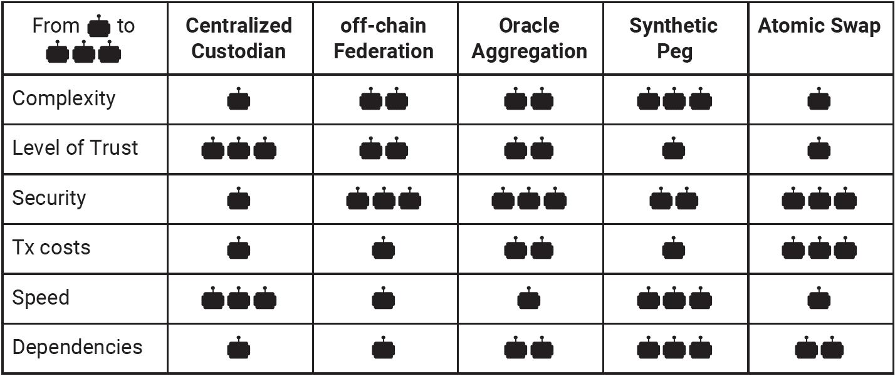
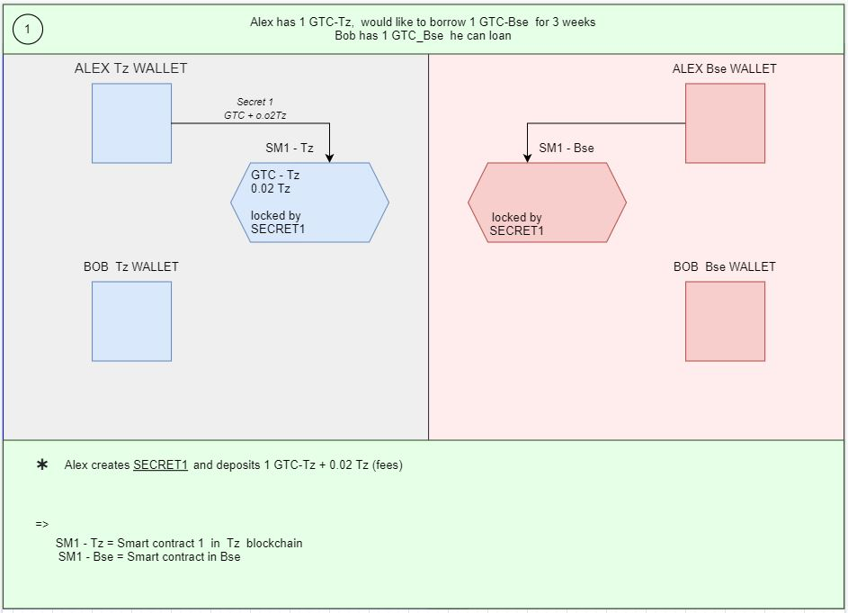
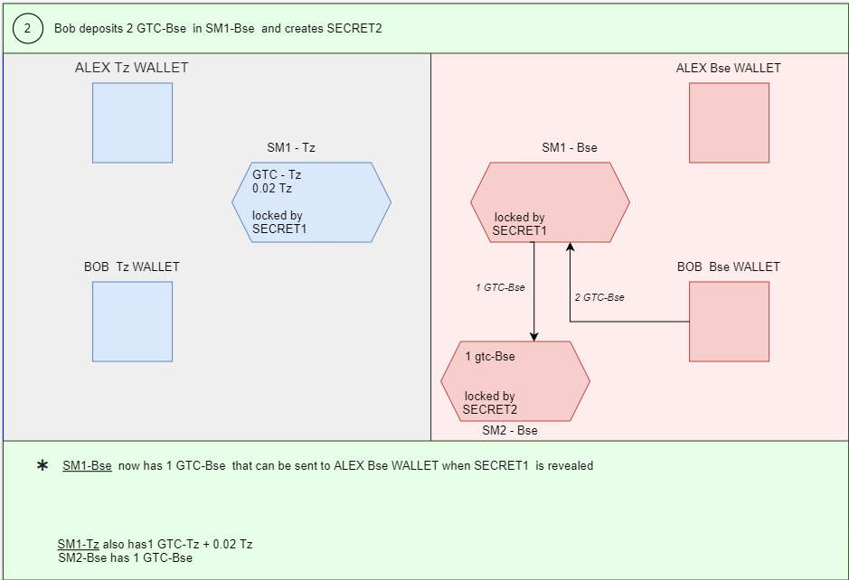
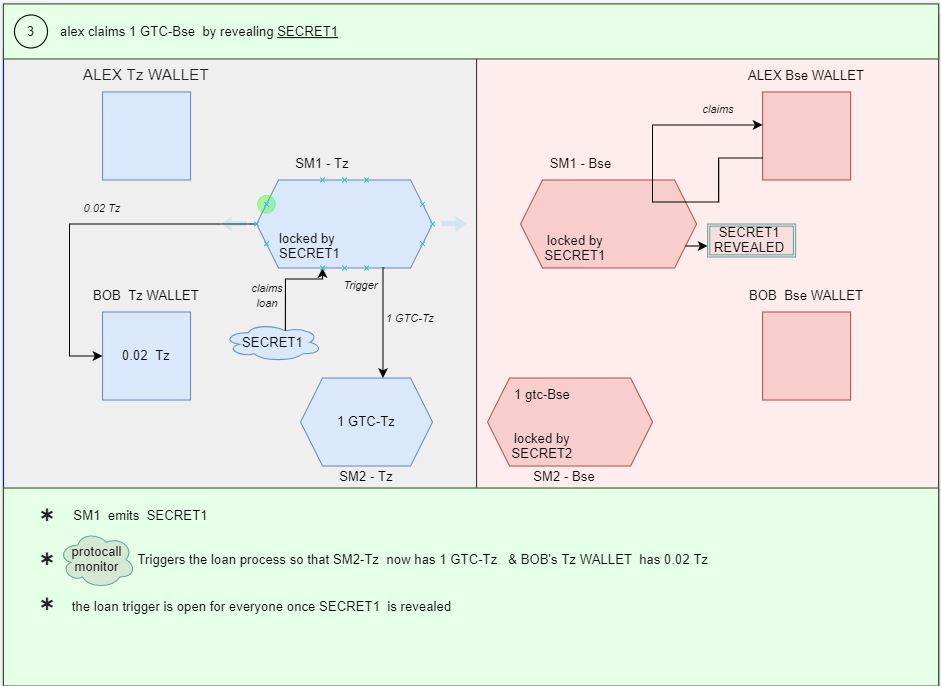
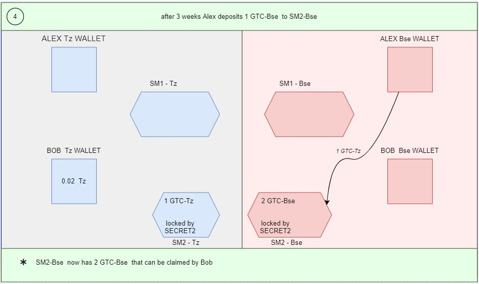
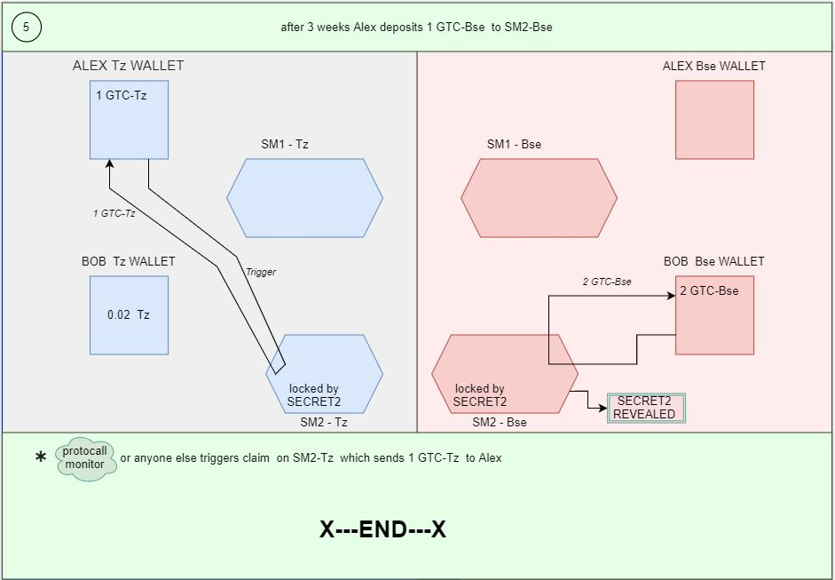
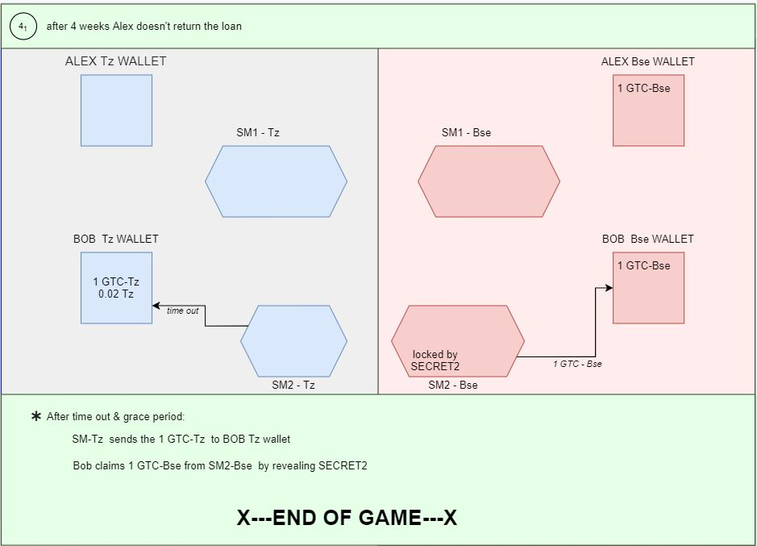
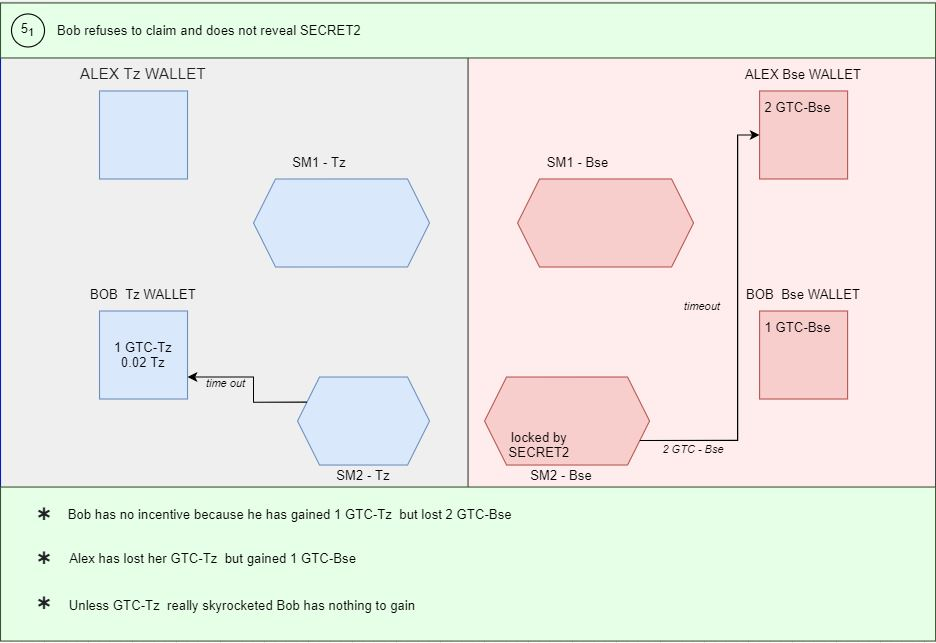

Cross Chain Loans
Nov 9 2021
Overview
This DApp provides a cross-chain (Tezos <> EVM) mechanism for loans, with collateral on one chain, and the loan being extended on another, with an automated, decentralized mechanism protecting both sides from abuse.
Problem Statement
- Alex has 1 “GTC-Tz” (FA1.2 Asset) in the Tezos chain.
- Alex feels that a closely related BEP20 Asset, “GTC-Bsc” in the Binance smart chain network, will appreciate more in the short term.
- Alex will like to Hold the GTC-Bsc for 3 weeks, but doesn’t want to permanently trade their coin.
- Bob has 1 “GTC-Bsc” that he would like to loan for 3 weeks and make 0.02 Tz as “interest” income.
Goals
- Fully decentralized mechanism, without centralized bookkeeper or administrator Enabling parties who do not know or trust each other to enter agreements easily
- Built-in disincentive against using the mechanism for permanent value transfer between chains
Comparison and technical choices
Thank you Wrap people @ Bender labs for doing these comparisons.. “To design our own version of a bridge between Tezos and Ethereum, we’ve compared these existing solutions across 6 characteristics:”
- Complexity: how complex is the solution? How hard is it to develop?
- Level of Trust: what is the degree of decentralization of the solution? Is it trusted, and if so what is the level of trust required by its users? Can the solution be censored or is it unstoppable
- Security : How secure is the solution? Is it easy to attack? Is it prone to errors or mistakes?
- Transaction costs : is the solution costly to use? Does it require a lot of on-chain operations?
- Speed : from a user perspective, how fast is the solution?
- Dependencies : last but not least, does the solution require a stack of existing tools on the Tezos or Ethereum blockchain?
The following table lays out our conclusions

Our Choices:
- Cross chain mechanism: As “low” level of trust is important in this project, our choices were Atomic Swap or Synthetic Peg. Considering the high security and speed afforded by “Atomic Swap” we decided to go for it.
- Match Book: For this MVP, we are focusing on proving the concept and not worried about matchmaking. Alex and Bob don't know or Trust each other but they like the loan terms. The initial “advertisement” and “non cryptographic” agreement is done off-chain. In future, this will create an “opportunity” to bring in financial modeling to propose good loan terms.
The Process flow
ASSUMPTIONS : BOTH Alex and Bob have wallets on both Tz and Bsc chains. They have Metamask (eth: https://metamask.io/download) and temple wallet (Tz https://templewallet.com/download/) installed and have some funds for “gas”.
Alex sets up the loan contracts

- Alex creates secret-1, hashes it with SHA-3
- On the Tezos side Alex deposits 1 GTC-Tz and 0.02 Tz to Tz-SmartContract1 along with the secret-1 hash. This funds can only be unlocked when the secret-1 is “revealed”
- Alex also Initializes the contract to Bsc-SmartContract-1 on the Binance Smart Chain side, and creates a place holder secured by the hashed secret-1.
NOTE: Secrets are create and stored “encrypted” using the “new” metamask user data encryption RPCs
Bob funds the loan

- Bob creates secret-2 and hases it using SHA-3
- Bob deposits “2”, double the loan amount, GTC-Bsc to Bsc-SmartContract-1 along with the hashed secret-2. The smart contract transfers 1 GTC-Bsc to Bsc-SmartContract-2 which serves as an escrow and holds on to this “security deposit” till secret-2 is revealed.
- On the Tezos side Bob updates the secret-2 hash.
Alex retrieves the loan

- Alex “reveals” secret-1, created in step-1
- The Bsc-SmartContract-1 transfers I GTC-Bsc to Alex’s Bsc wallet
- The Tz-SmartContract1 moves Alex’s funds, the 1 GTC-tz to an escrow locked by secret-2. It also transfers the fees, 0.02 tz to Bob’s Tz wallet.
Alex now has the loaned funds and Bob has his income
Alex returns the loan in 3 weeks

- Alex transfers 1 GTC-Bsc to Bsc-SmartContract-2, where it is secured till secret-2 is revealed.
Loan assets are returned

- Bob can see that the funds are available in Bsc-SmartContract-2 and reveals secret-2, which transfers the 2 GTC-Bcs back to Bob’s Wallet
- On Tezos side, the smart contract sends the 1 GTC-Tz back to Alex’s wallet.
The LOAN has been returned
Alex 3 weeks alex defaults on the loan

- The Tz-SmartContract1 sends 1 GTC-Tz to Bob’s Tz wallet
- The Bsc-SmartContract-2 send the “deposit” 1 GTC-Bsc to Bob’s Bsc wallet
Alex has defaulted. Everyone gives bad ratings to Alex.
Alex has 1 GTC-bcs but has lost their 1 GTC-tz. Bob has lost his 1 GTC-Bsc. Unless GTC-bsc prices has appreciated much more than the GTC-bsc, Alex basically paid the “fees” to own one.
This process allows us to increase the “penalty” on Alex for defaulting if further financial modeling suggests so.
Alex returns the loan but Bob refuses to reveal secret-2

- Once the timelock for Bob to get his deposit back, Bsc-SmartContract-2 sends the whole thing, 2 GTC-Bsc to Alex’s wallet
Bob has defaulted. Everyone gives bad ratings to Bob.
Alex has lost 1 GTC-bcs but gained 2 GTC-tz. Bob has lost his 2 GTC-Bsc and Alex’s GTC is stuck in limbo. There’s no incentive for Bob to be in this situation.
This process allows us to increase the “penalty” on Bob for defaulting if further financial modeling suggests so.
Race conditions and re-entrancy vulnerability
- There is always a 24 hour timelocks between steps to avoid exploitations between smart contract step execution times.
- If we need this solution to work for high speed trading scenarios, we will have to analyse the time locks and adjust accordingly.
MVP Status and milestones
- The MVP is hosted at https://ne-crosschain-loans.staging.newearthart.tech/
- The code is open sourced with MIT license at https://github.com/shreedee/tezos-cross-chain-Loan
- Currently it is “hard coded” for the Ropsten (EVM) and Granadanet (Tz) test nets
- The complete flow from Step 1 thru 7 from this litepaper is functional
milestones
- The UX needs to be seriously looked at
- Search tools for finding loans in progress, past information and match making
- Audit the smart contracts
- Better real time feedback, while smart contracts are executing steps and waiting for confirmations
- Support for more wallets ( right now it’s limited to Metamask for EVM and temple wallet for tezos).